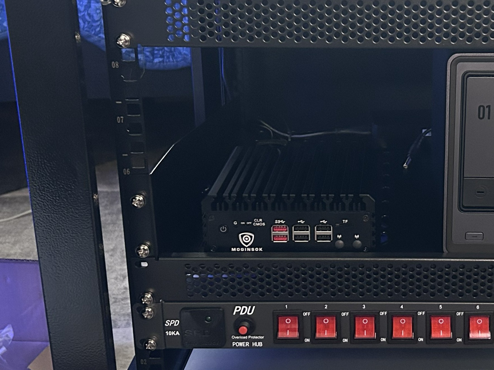
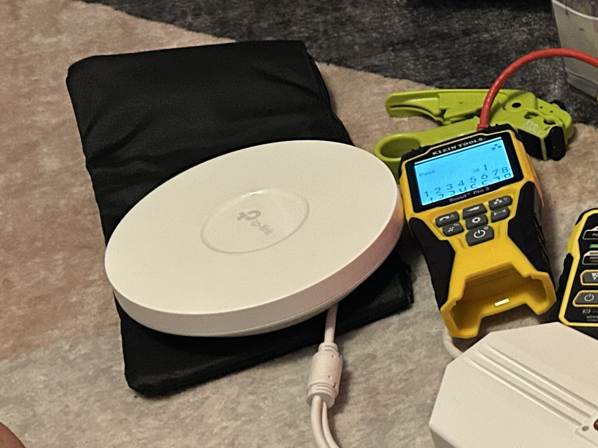
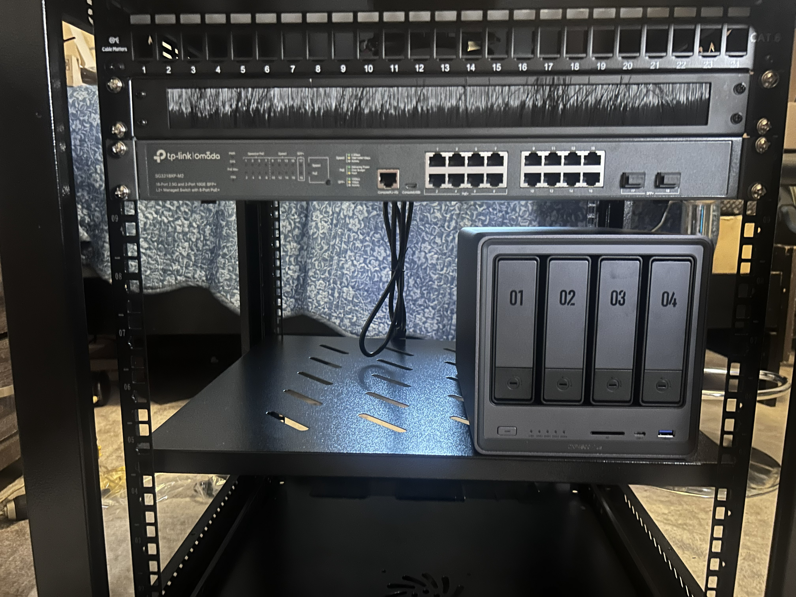

Firewall Appliance
Intel N100 mini PC running pfSense
Four Intel i226 2.5 GbE interfaces provide dedicated connectivity and multi-gig routing capacity.

Planned and assembled a reliable multi-gig home-lab foundation connecting firewall, switching, wireless, storage, surveillance, management, and lab equipment.
The goal was to build a physical platform that could support everyday home devices, isolated cybersecurity experiments, centralized storage, IP cameras, guest access, and secure infrastructure management. The design prioritizes reliability, serviceability, wired multi-gig performance, wireless coverage, and future expansion.
Each component was selected for a specific infrastructure role.
Intel N100 mini PC running pfSense
Four Intel i226 2.5 GbE interfaces provide dedicated connectivity and multi-gig routing capacity.

TP-Link JetStream SG3218X-M2-series managed switch
Acts as the wired distribution point for the firewall, access points, NAS, cameras, and workstations.

TP-Link OC200
centrally manage all my Omada devices — access points and switches from one unified interface.
Two TP-Link EAP650 Wi-Fi 6 access points
Separate AP placement provides broader coverage and dedicated wireless service for home and lab use.

UGREEN DXP4800 Plus NAS
Provides centralized storage, backups, and a recording destination for the surveillance system.

Reolink IP camera
Connects through the managed network and records video to the NAS without requiring a separate recorder.
CyberPower OR500LCDRM1U UPS
Protects core equipment from short outages and unstable power while supporting orderly shutdown planning.
The managed switch is the central distribution point for every wired infrastructure component.
Defined the wired, wireless, storage, surveillance, management, and lab requirements before selecting compatible multi-gig equipment.
Connected the ISP handoff to the pfSense appliance and installed the managed switch as the core distribution layer.
Connected both access points, the NAS, camera, management workstation, and lab equipment to planned switch ports.
Placed critical infrastructure on UPS protection and organized cables so devices and connections could be identified, maintained, and expanded.
Verified power, Ethernet link status, negotiated speeds, device visibility, and access-point placement before beginning logical configuration.
A single managed-switch core simplifies cabling, troubleshooting, expansion, and later network segmentation.
Using two APs improves physical coverage and allows home and lab wireless workloads to be served independently.
Central storage supports backups and continuous camera recording while remaining available to approved systems.
Next: Part 2 will document VLANs, addressing, DHCP, SSID mapping, firewall policy, inter-VLAN access, Suricata, pfBlockerNG, testing, and troubleshooting.